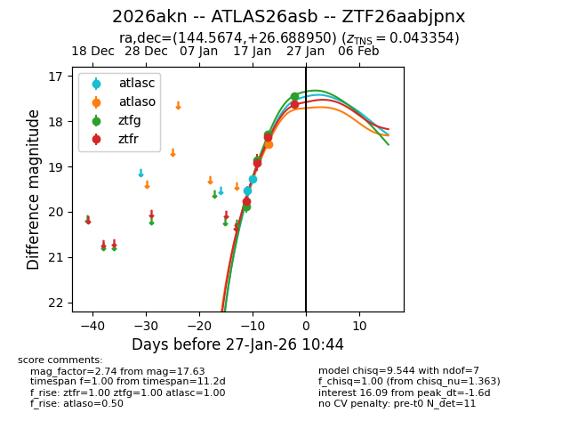
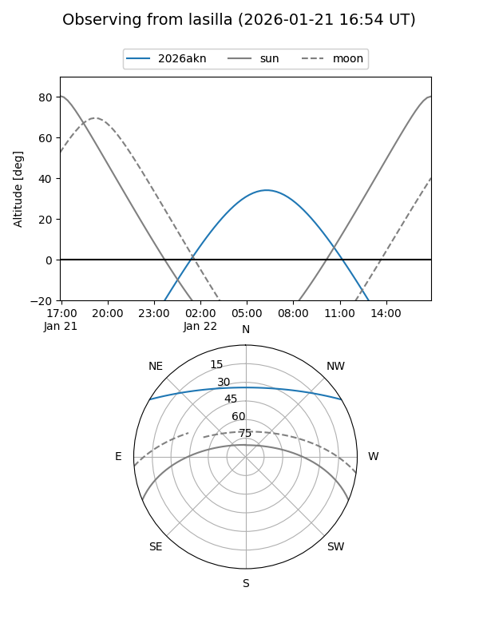
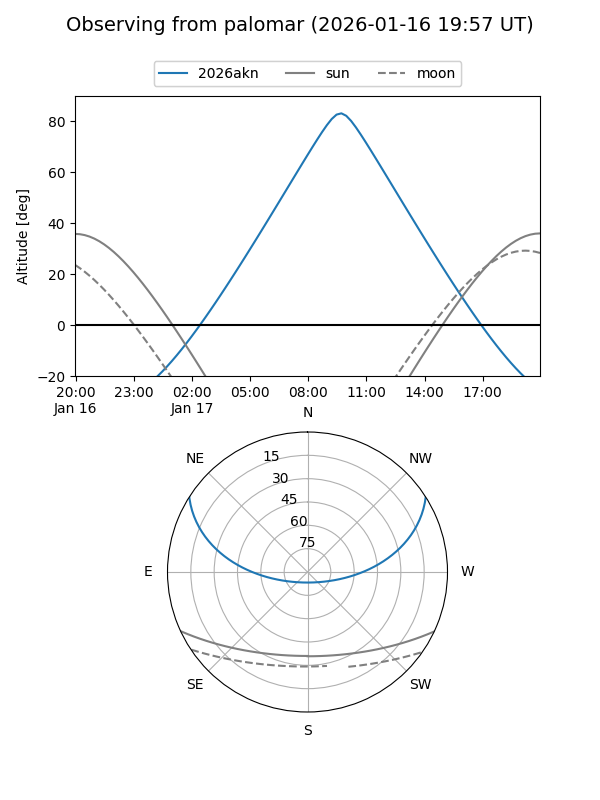
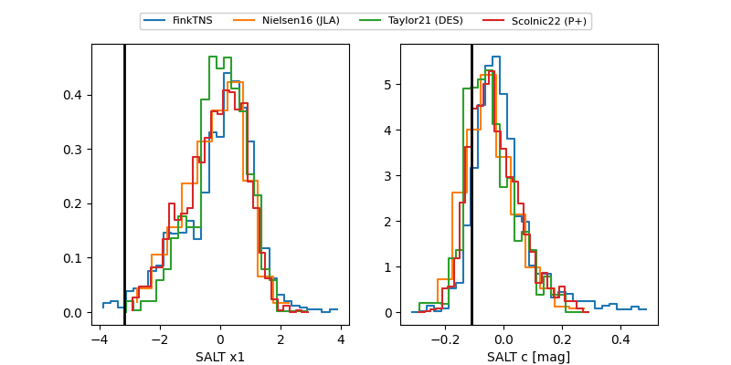

2026akn
Target 2026akn at 2026-01-24 05:26
Aliases and brokers:
FINK: link
Lasair: link
ALeRCE: link
TNS: link
YSE: link
alt names
ZTF26aabjpnx (ztf,fink_ztf)
2026akn (tns,yse)
ATLAS26asb (atlas)
Coordinates:
equatorial (ra, dec) = 144.5674,+26.68895
equatorial (HMS+DMS) = 09:38:16.17,+26:41:20.22
galactic (l, b) = (202.0128,+47.21054)
Flags:
confirmed ia
Photometry:
last atlasc=19.28, atlaso=18.50, ztfg=18.29, ztfr=18.35
2 atlasc, 1 atlaso, 3 ztfg, 3 ztfr detections
Lightcurve

Visibility


Additional plots
